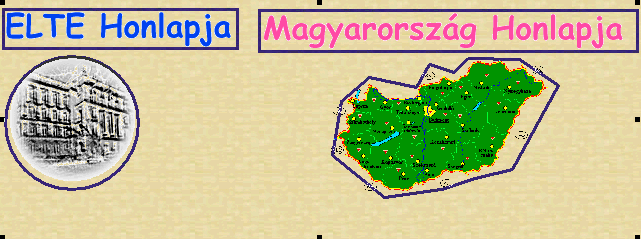

A Microsoft Frontpage ’97
Editor program
angol nyelvû változatának ismertetése
II. rész
Képet az  ikonnal, vagy az Insert/Image menüponttal illeszthetünk be az oldalba.
ikonnal, vagy az Insert/Image menüponttal illeszthetünk be az oldalba.
A megjelenõ ablak Other location részében megadhatjuk a kép elérés útját, vagya Browse gomb megnyomásával kiválaszthatjuk a képet az alkönyvtárstruktúrából.
Ha az installálás során a Clipart részt is feltelepítettük, akkor a Clipart fül kiválasztásával a programhoz gyárilag adott grafikák közül is választhatunk.(animációk, hátterek, gombok, elválasztó vonalak, ikonok)
A beillesztett kép tulajdonságait úgy tudjuk megváltoztatni, ha a képen az egér jobb gombjával kattintunk, majd a megjelenõ menübol kiválasztjuk az Image properties pontot, vagy lenyomjuk az Alt+Enter billentyûket. Ekkor a következõ ablak jelenik meg:
Az Image source mezõ tartalmazza a kép elérési útját, illetve a nevét. Ha ezen módosítani szeretnénk, akkor ezt itt tehetjük meg. A Browse gomb megnyomásával kiválaszthatunk egy másik képet is. Az Edit gomb lenyomásával elindul az a képszerkesztõ program amelyet a Frontpage explorerben a képekhez hozzárendeltünk. (Tools/options)
Az Alternative Representations részben az Text mezõbe beírt szövegnek az a szerepe, hogy ha a böngészõ nem képes a képeket megjeleníteni (fizikailag nem képes pl. LYNX, vagy csak ki van kapcsolva a képek megjelenítése funkció), akkor ez a szöveg jelenik meg helyette.
A Low res részben megadhatjuk annak a képnek az URL-jét, amelyet a felhasználó addig fog látni, míg a teljes kép le nem töltõdik. (nem mindegyik böngészõ támogatja) Természetesen ezt a képet célszerû olyan formában elmenteni, hogy jelentõsen kisebb méretû legyen, mint a másik. (pl fekete-fehérben, 256 szürke árnyalattal)
A Default Hyperlink részben definiálhatjuk, hogy a képre kattintva milyen oldalra jussunk el. (Location) A Target Frame mezõbe azt a frame nevet kell beírnunk, ahova szeretnénk, hogy a link betöltõdjön.
Most nézzük az Appearance (megjelenés) részt.
(Az Image toolbar (kép eszköztár) sajnos a Frontpage Expressz programban nem elérhetõ.)
Nézzük az ikonok jelentését.
| A kép adott színének átlátszóvá tétele |
A kép egy tetszõleges színét átlátszóvá tehetjük, ha a fenti ikonnal a kép az adott színére kattintunk.
 |
(Ebben a példában a fekete színt tettük átlátszóvá. Amikor az oldalunkat elmentjük, akkor a módosított képet felül fogja írni a program.)
(Figyelem!!! Csak GIF formátumú képekkel mûködik)
Természetesen más programokkal is megoldható az adott kép
egy színének átlátszóvá tétele, gyakorlatilag szinte
minden grafikai program ad erre lehetõséget. A Microsoft
Photo Editorban szintén az  ikonnal érhetjük el
ezt a funkciót, a CorelDraw programcsomag Corel
Photo Paint programja a GIF formátumú képek
elmentésénél lehetõséget ad arra, hogy meghatározzuk a
transparent (átlátszó) színt.
ikonnal érhetjük el
ezt a funkciót, a CorelDraw programcsomag Corel
Photo Paint programja a GIF formátumú képek
elmentésénél lehetõséget ad arra, hogy meghatározzuk a
transparent (átlátszó) színt.
A fentmaradó ikonok az úgynevezett HOTSPOT-ok létrehozására, kezelésére szolgálnak..
HOTSPOTNAK nevezzük a kép azon területét, amely egy LINK szerepét tölti be. Azt a képet, amely rendelkezik ilyen hotspot(ok)al Image Map-nek hívjuk.
Példá egy Image Map-re.
A többi ikon funkciója
| Ezzel választhatjuk ki azt a hotspotot (érzékeny területet) amelyet mozgatni, törölni, módosítani, stb...szeretnénk | |
| Ezzel egy téglalap alakú területet adhatunk meg | |
| Kör alakú érzékeny területet adhatunk meg | |
| A szakaszok végpontjainak kijelölésével szabálytalan területet is megadhatunk. | |
| csak az érzékeny-területeket mutatja meg |
Ha definiáltunk egy érzékeny területet, akkor feljön az az ablak, amlyben megadhatjuk a hozzávaló linket.
Nézzük, hogy a fenti példában, milyen területetek lettek kijelölve:

Ha kiválasztjuk azt az opciót, hogy csak az érzékenyterületek látszódjanak, akkor a következõ ábrát látjuk:
Elválasztó vonalakat az Insert/Horizontal Line menüponttal illeszthetünk be az oldalba.
Az elválasztó vonal tulajdonságait megváltoztathatjuk, ha az egér jobb gombjával elõhívható menüben kiválasztjuk a Horizontal Line properties gombot.
Itt megadhatjuk a vonal méretét (width) pixelekben illetve százalékos megadási formában. A vonal magasságát (Height) illetve az igazítását (Alignment) illetve a színét (Color) is beállíthatjuk A Solid line paraméter kiválasztásakor egy egyszerû, nem árnyékolt vonalat kapunk.
Azt már megismertük, hogy hogyan
készíthetünk felsorolás ill. számozott listákat. ( )
)
Most nézzük, milyen további lehetõségeink vannak a listák formázására.
A formázási lehetõségeket a Format/Bullets and numbering... menüponttal érhetjük el.
A bulleted részben kiválaszthatjuk azt a szimbólumot, amely a listalemek elõtt fog szerepelni.
A Numbered részben beállíthatjuk a számozás formátumát (számok, betûk) illetve azt, hogy mely számtól történjen a számozás.(Start at)
Lehetõségünk van arra is, hogy az oldal forrásába mi magunk illesszünk be egy HTML kódot. Ehhez a View/HTML... menüpontot kell kiválasztanunk.
Ûrlapokat a Forms toolbar illetve az Insert/Form Field menüpont segítségével állíthatunk össze.
| Ikon | Funkció | Példa |
| Egysoros szövegdoboz beillesztése (Insert/Form Field/On-Line Text box) |
Mi a neved? | |
| Gördíthetõ szövegdoboz beillesztése (Insert/Form Field/Scrolling Text box) |
Kérlek írj magadról pár mondatot.... | |
| Check box beszúrása (Insert/Form Field/Check box) |
Mivel szeretsz foglalkozni szabadidõdben? | |
| Radio gomb beillesztése (Insert/Form Field/Radio button) |
Mi a legmagasabb iskolai végzettséged? | |
| Legördülõ menü beillesztése (Insert/Form Field/Drop down menu) |
Az alábbi szórakozási
lehetõségek közül melyik áll hozzád a legközelebb?
|
|
| Nyomógomb beillesztése (Insert/Form Field/Push button) |
Összeállította:
Abonyi-Tóth Andor
©ELTE TTK Informatika Szakmódszertani Csoport